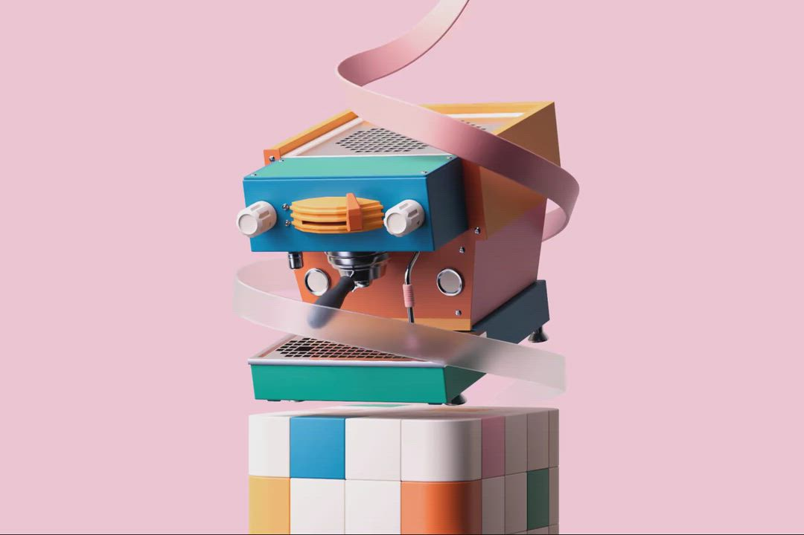
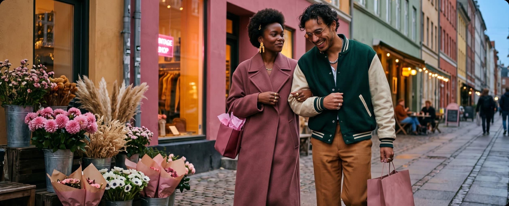
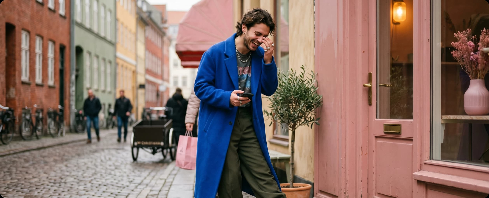
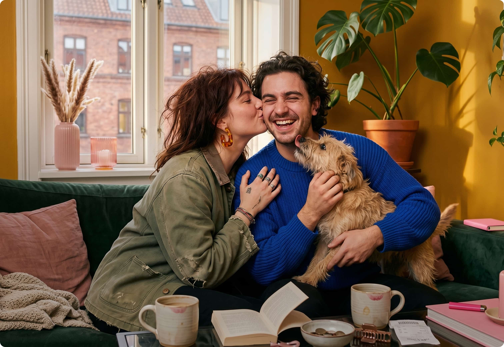
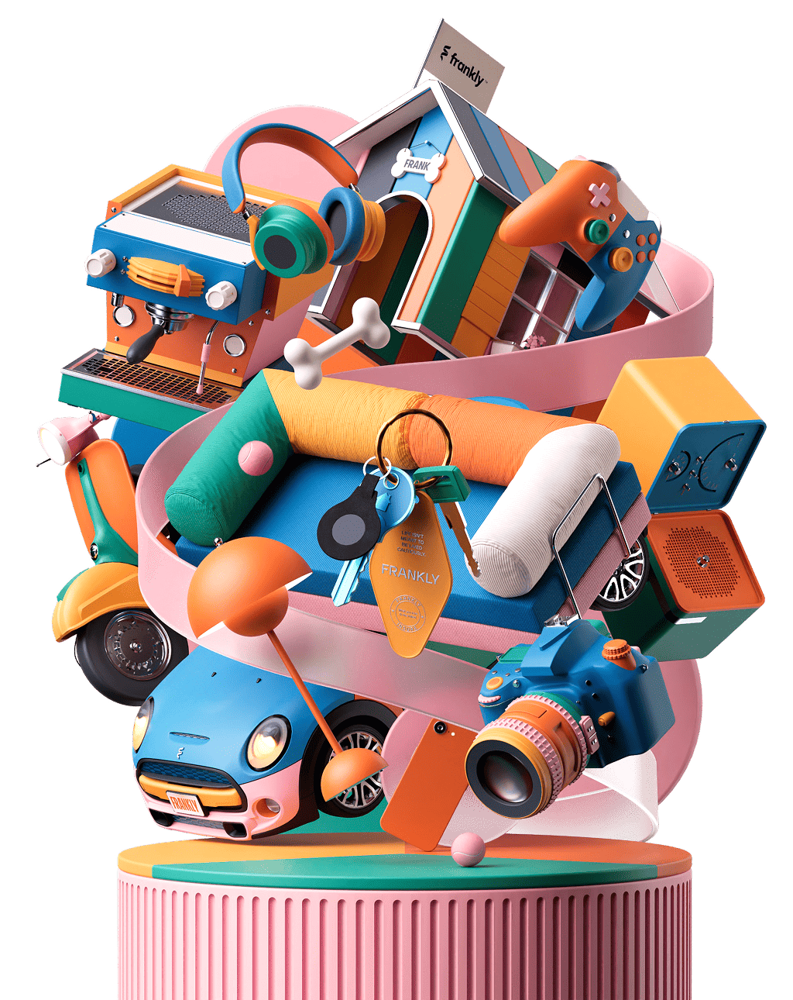
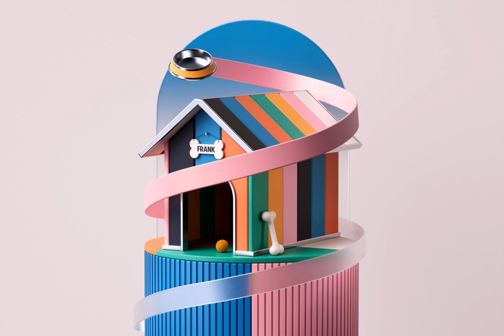
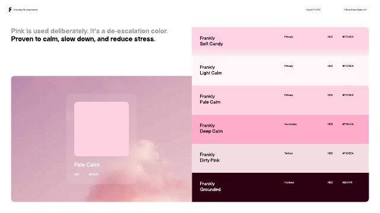

Every curated ribbon, frame, photograph, object, mark and supporting reference in one place. Open any visual for its source, status and intended use. Nothing here is cleared for public distribution.
03 · Ribbon Atlas
A ribbon must do something.
It wraps, leads, connects, reveals or creates depth. If the ribbon has no spatial job, leave it out.

Job · wrap + protectWrap
The ribbon establishes a relationship around the object. It has thickness, light, shadow and a believable path.
Job · connect + guideConnect
One continuous gesture joins devices and guides the eye. The path explains the connection before labels do.
Job · lead + create depthLead
The ribbon moves through a real scene, crosses depth planes and gives the composition direction.
04 · Photography
Life first. Insurance somewhere behind it.
Use lived-in places, candid energy and people absorbed in their own world. Protect the focal person and leave enough room for one clear editorial statement.

Observed, not staged.
Warm street light, tactile colour, human chemistry and a clear place. The frame feels like a moment, not an insurance advertisement.

One person · one action · one colour beat

Warm home light · intimacy · tactile detail

05 · 3D / Object / Material
Everyday things, made tactile.
Build one physical protagonist from recognisable objects. Use coloured metal, soft textile, translucent ribbon, honest shadows and a real base. Detail supports recognition; it never becomes visual noise.
Use a slow, purposeful loop. The object remains legible at rest; reduced-motion users receive the complete poster frame.
Assemble · reveal the full worldWrap · show protection around one objectConnect · make the path between devices visible
07 · Brand in use
Foundations belong inside a composition.
Bordeaux anchors, pink brings energy, limestone creates quiet. Almarena leads; Switzer explains. The logo gets room and never competes with the protagonist.
Primary wordmarkCompact mark

Material · light · ribbon depth

Reference onlyManual palette excerpt
Warm. Clear. Alive.
08 · Compact quality door
The visuals lead. The rules protect them.
01
Name the approved reference.Transfer a principle from website, Investor, Bike & Co or Instore.
02
Choose one protagonist.Person, object, photograph, type statement or one data conclusion.
03
Give the ribbon a job.Wrap, lead, connect, reveal or create depth—or omit it.
04
Show the real crop.Record source, focal point, allowed crop and rights status.
05
Plan the still state first.Motion orients and explains. The poster frame carries the full meaning.
06
Render before approval.Desktop, tablet and mobile evidence plus an independent ≥13/15 critic.
No ground truth, protagonist, real asset, ribbon job, responsive plan or rendered evidence means no build.